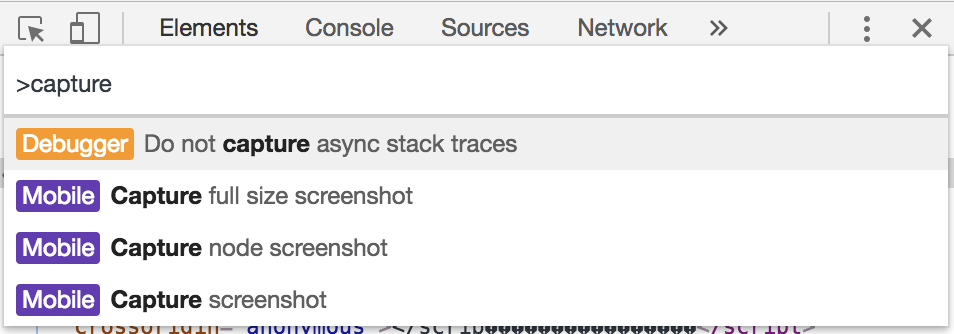

スクリーンショット駆動開発
アプリケーション開発をしていて，日々，スクリーンショットに助けられている．
主に情報共有やバグトリアージ，メモ目的でよく使っているツールなどをまとめる．
Gyazo
撮影したスクリーンショットをURLで共有できるサービス．アプリケーション起動すると， Gyazo のスクリーンショットモードになり撮影するとブラウザで URL が表示される（そのときに URL がクリップボードにコピーされる）．同様に GIF 動画も撮影でき，実装時の UI 表現の共有で使ったりする．
Slack でのスクショ共有
特に重宝しているのが，Slackでスクショ共有するとき．
Slack の Thread では画像の添付ができず，メイン側に画像をアップロードしてその URL を Thread 側にコピペする，という手間をかけていた．Gyazo なら Thread に URL を投稿するだけでハイライトもされるし，楽チン．
Gyazo Pro
有料課金するか迷っている．
６秒まで録画可能で，有料課金すると６０秒まで録画できるみたい．サービス画面のキャプチャ撮りたいときは，１０秒だと足りないことがあるので，課金してもいいかなと思っている．それとキャプチャした画像に文字を入れるなど加工もできる点も魅力的．
キャプチャに文字を入れたいシーンはわりとある．
skitch にスクショを貼り付けて加工した結果を，Gyazo で再度キャプチャするというフローを踏んでいてとても手間を感じている．てか，skitch って Evernote のサービスだったのか．(2011年に買収されたらしい)
Mac Screenshots
範囲選択スクショ
をよくつかう．
- スクリーンショットフォルダに保存：command + shift + 4
- クリップボードに保存：command + shift + control + 4
スクリーンショットはデフォルトではデスクトップに保存されるが，Dropbox の機能で Dropbox フォルダに保存されるようにしている．
スクリーンショットモード中の “スペースキー” が便利．
スクショ範囲をフォーカスしているアプリケーションが，自動的にスクショ範囲になる機能．
アプリケーションウィンドウだけでなく，ナビゲーションバーやアイコンにも自動フォーカスしてくれる．

Chrome Dev Tools
DOMなどのスクリーンショットを取ることができる．
- Chrome Dev Tools で command + shift + p
- “capture” で検索
- 例えば，capture node screenshot を選択すると，Dev Tools で選択している node のスクショが撮影できる

モバイルのスクリーンショット
iPhone でもよくスクリーンショットを使うので，Photo 容量を圧迫してしまう．ワンタップでスクリーンショットが削除できるスクショケシというアプリを使っている．タベリーを開発している10xさんが開発しているらしい．UI のトーンがかわいい．
スクショケシで2マイのスクショをケシました #スクショケシ https://t.co/dCKaJqBruu pic.twitter.com/FNZByFNvw8
— tanaka.world ™ (@_tanakaworld) April 3, 2018
まとめ
No Screenshot No Life